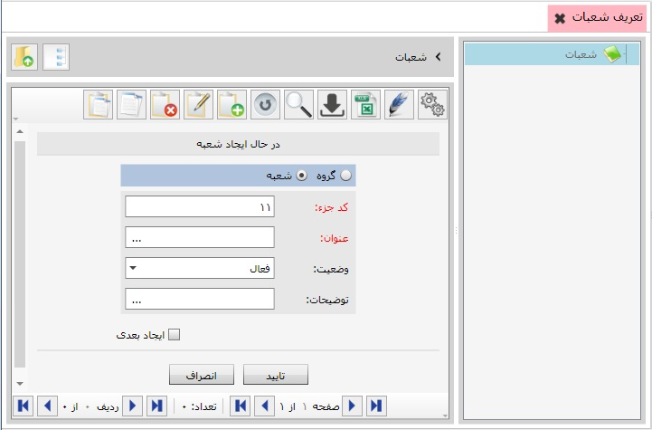

این قسمت به شما این امکان را می دهد تا شعبات خود را که در سیستم های صدور سفارشات، انبارداری، خریدوفروش و تولید مورد استفاده شما قرار می گیرد تعریف کنید. به عنوان مثال کالایی را که خریداری کرده اید، می توانید مشخص کنید برای کدام شعبه است. برای تعریف شعبات مورد نظرتان، بر روی آیکن تعریف شعبات کلیک کنید آنگاه با زدن کلید (F8) یا انتخاب گزینه اضافه شعبات خود را ایجاد کنید.
